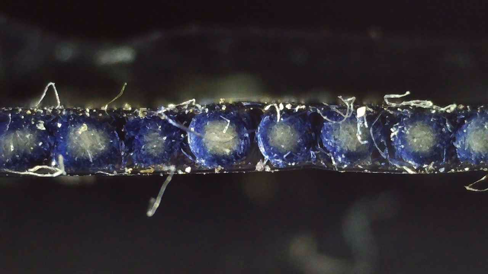
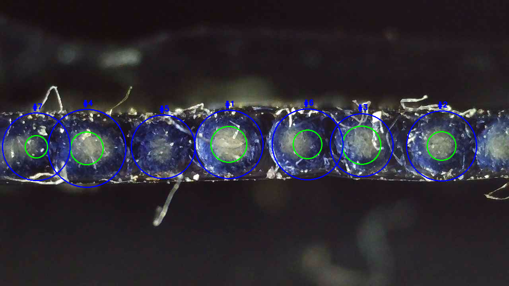

Hybrid YOLO + classical CV on a near-zero-data problem
A two-stage computer vision system that automatically detects and measures ring structures in microscopic fiber cross-section images combining a YOLO-based detection model to localise fiber ring regions with an OpenCV geometric pipeline to extract precise structural measurements, built to work reliably on a dataset of only 4-8 unlabeled images.
This project is a computer vision system that automatically detects and measures ring structures in microscopic cross-section images of industrial fibers. The rings represent distinct internal layers fiber core, intermediate structural material and outer cladding and their geometry is a direct indicator of manufacturing quality.
The dataset was extremely limited, only 4-8 images with no labeled annotations, compounded by uneven lighting, microscope reflections and visibly distorted ring shapes. These factors made traditional machine learning segmentation approaches unreliable, since they require large labeled datasets to generalize.
To solve this, I designed a two-stage hybrid system combining deep learning and classical computer vision. A YOLO-based object detection model first identifies regions of interest containing individual fiber rings. Each detected region is then processed through an OpenCV-based geometric analysis pipeline to extract precise measurements including ring radii, layer thickness and structural ratios. This approach enabled accurate automated measurements even under small-dataset constraints and challenging microscopy conditions.
Fiber manufacturers need to measure ring structures in cross-section images to verify layer thickness, structural symmetry, manufacturing consistency and potential production defects. Manual measurement is slow and subjective but the conditions of this dataset made standard automated approaches equally inadequate.
Simple computer vision techniques are unreliable on noisy microscopy images with inconsistent lighting. Conventional deep learning models require large labeled datasets that didn't exist here. The combined constraints created a scenario where neither approach alone was sufficient.
I implemented a two-stage hybrid pipeline that separates the detection problem from the measurement problem using the most appropriate technique for each task rather than forcing a single approach to do both.
A YOLO-based model detects regions containing individual fiber rings, giving output in form of bounding boxes around each ring of interest. This isolates individual fiber segments from the larger microscopy image and handles scene-level noise that would confuse a purely geometric approach.
Each detected ROI is processed through an OpenCV pipeline to extract precise geometric measurements. Classical algorithms are deterministic they need no training data and produce reproducible results, making them ideal where measurement accuracy matters most.
YOLO handles the detection task robustly despite imaging noise; its learned representations generalize better than hand-crafted rules when lighting and positioning vary. Classical CV handles measurement precisely, without the need of labeled training data.
Neither approach alone would be sufficient. Together they cover the full pipeline cleanly.
Standard Hough circle detection assumes perfectly circular rings. Fiber deformation and microscope viewing angle produce elliptical distortions that break this assumption causing missed detections and incorrect radius values.
Ellipse fitting uses a least-squares approach to find the best-fit ellipse for any contour shape, accurately capturing true ring geometry regardless of how much it deviates from circular.


| Ring ID | Blue Radius (mm) | White Radius (mm) | Radius Ratio | Coverage Ratio | Confidence |
|---|---|---|---|---|---|
| 1 | 22.36 | 11.70 | 0.52 | 0.27 | 0.89 |
| 2 | 22.88 | 9.36 | 0.41 | 0.17 | 0.87 |
| 3 | 20.54 | 12.48 | 0.61 | 0.37 | 0.87 |
| 4 | 25.48 | 10.66 | 0.42 | 0.18 | 0.80 |
| 5 | 20.80 | 0.00 | 0.00 | 0.00 | 0.76 |
| 6 | 23.14 | 9.36 | 0.40 | 0.16 | 0.72 |
| 7 | 22.10 | 7.28 | 0.33 | 0.11 | 0.46 |
The system successfully automated the analysis of fiber cross-section images and produced consistent, reproducible structural measurements across all available samples with no training labels, no per-image manual tuning and no intervention required once the pipeline is configured.
Key outcomes included automated YOLO-based detection of fiber ring regions, precise geometric measurement of distorted rings via ellipse fitting and a significant reduction in manual inspection effort. The hybrid architecture demonstrates how combining deep learning robustness with classical CV precision can address real problems that neither approach could solve independently particularly under severe data constraints.